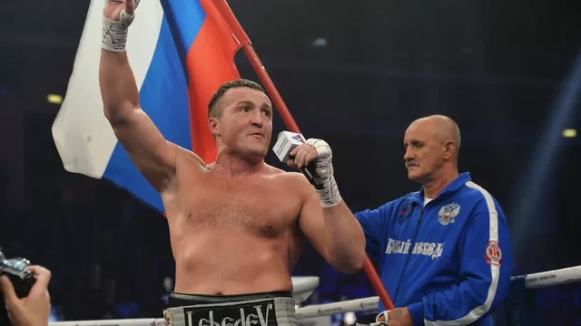

10:05 09.02.2024
Лебедев назвал формальностью нейтральный статус россиян на Олимпиаде
Боксер Лебедев назвал формальностью нейтральный статус россиян на Олимпиаде-2024
МОСКВА, 9 фев – РИА Новости, Иван Орехов. Бывший чемпион мира по боксу в первом тяжелом весе Денис Лебедев в интервью РИА Новости заявил, что нейтральный статус россиян на Олимпийских играх 2024 года в Париже является формальностью, так как спортивное сообщество знает, какую страну представляют атлеты.
Ранее Международный олимпийский комитет (МОК) объявил о допуске россиян и белорусов на Олимпиаду в индивидуальном нейтральном статусе при соблюдении ряда критериев. Президент России Владимир Путин заявлял, что в вопросе участия россиян в Олимпиаде в Париже нужно руководствоваться интересами спортсменов, решение остается за ними. При этом глава государства отмечал, что если будет иметь место ущемление прав спортсменов из спортивных обществ ЦСКА и "Динамо", то Минспорт и Олимпийский комитет России (ОКР) должны принять "взвешенное решение".
Гораздо активнее были помощники Слуцкого - Березуцкий и Яровинский. Они пытались докричаться до игроков с трибун не очень масштабного по последним катарским меркам стадиона и обменивались мнениями с главным. В январе Леонид Викторович заявлял, что проведение товарищеских матчей против сильных соперников вне зависимости от результата будет полезным для его команды. В матче с "Зенитом" все сложилось именно так — удручающие 0:6 и внушительная чаша пищи для размышлений.
В полуфинале 25-летняя россиянка, занимающая 15-е место в рейтинге Женской теннисной ассоциации (WTA), встретится с победительницей матча между первой ракеткой турнира Еленой Рыбакиной из Казахстана и испанкой Кристиной Бучей.
Главные новости
-
Друг Овечкина временно покинул "Вашингтон". Новая эпидемия в НХЛ?
11.38
-
Бетербиев и Бивол подерутся летом! Отвечаем на пять главных вопросов по бою
12.53
-
Последний шанс. Хэмилтон идет в "Феррари" за рекордным титулом
12.53
-
В "Шанхае" - без раскачки: клуб Слуцкого разгромно проиграл "Зениту"
12.53
-
Самсонова вышла в полуфинал турнира в Абу-Даби
14.13
-
Лебедев назвал формальностью нейтральный статус россиян на Олимпиаде
10.05